Simple and Easy Recipes
Mutton Dakbunglow Curry / Mutton Dakbangla
© 2016 Spicy World, Published on: Dec 23, 2015
'Dakbanglow' means roadside resting house. Travelers used to take rest or halt for a night in those houses. The care taker of those 'bunglow's cooked this curry for their guests. Nowadays these kind of recipes are almost lost but in a few restaurants in Kolkata you can still find this dish. This is a typical bengali recipe and the tastiest dish ever. Once I ate this curry in my aunt's house and I can still remember the taste. The curry has juicy mutton, spicy gravy, flavorful potato and egg .. do you want anything more ?? It goes very well with plain basmati rice. 'Mutton Dakbangla' will be a great hit for Christmas dinner also. Try this in your kitchen and make your meal a special one.

Ingredients
- 10 pieces of with bone mutton.
- 6 Teaspoons of curd.
- 1 Teaspoon of ginger and garlic paste.
- 1 big onion thinly sliced.
- Whole spices (few fenugreek [methi] seeds, 4 cloves, 4 green cardamoms, 1 bay leaf).
- Salt and sugar.
- 5 Tablespoons of mustard oil.
- Spice powder (1 Teaspoon turmeric powder, 1 Teaspoon red chilli powder, half Teaspoon nutmeg [jayfal] powder, a blade of mace [javetri], 1 Teaspoon roasted coriander powder and 1 Teaspoon garam masala powder).
- 2 pieces of potato.
- 1 hard boiled egg.
- Water.

Steps
Put all the above mentioned spice powder and 2 Tablespoons of mustard oil in a bowl. Mix it well.
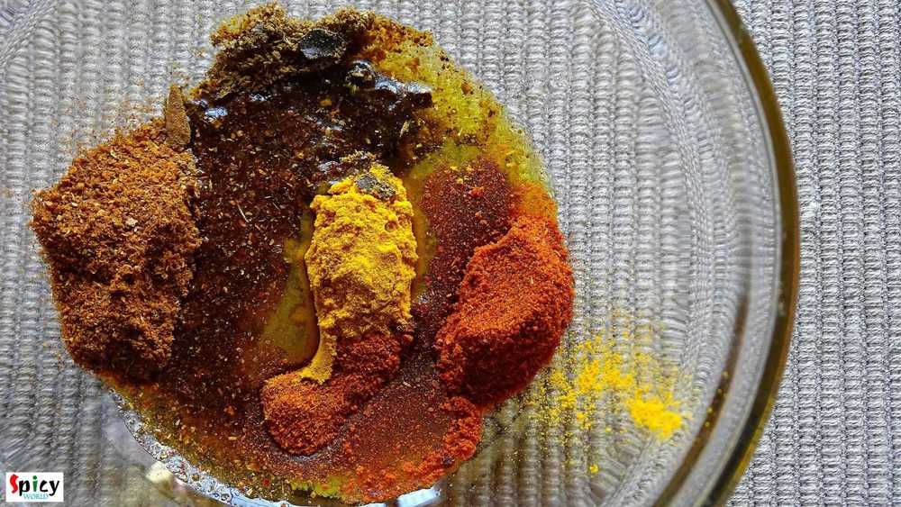Add ginger and garlic paste to it. Mix it well.
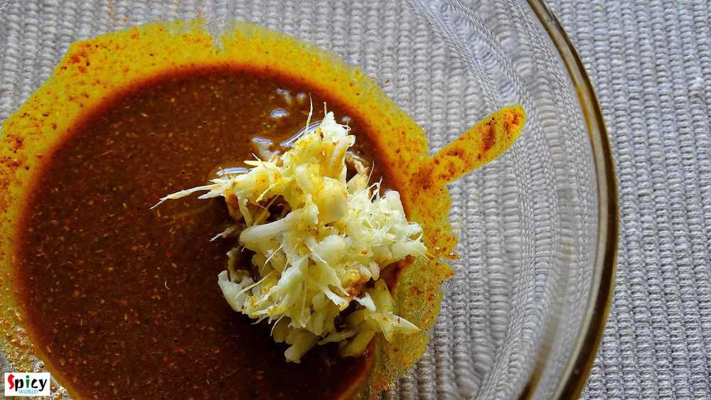Marinate the mutton pieces with curd, pinch of salt and this masala paste. Massage the pieces with masala very well. Keep it in fridge for 5 hours or overnight.
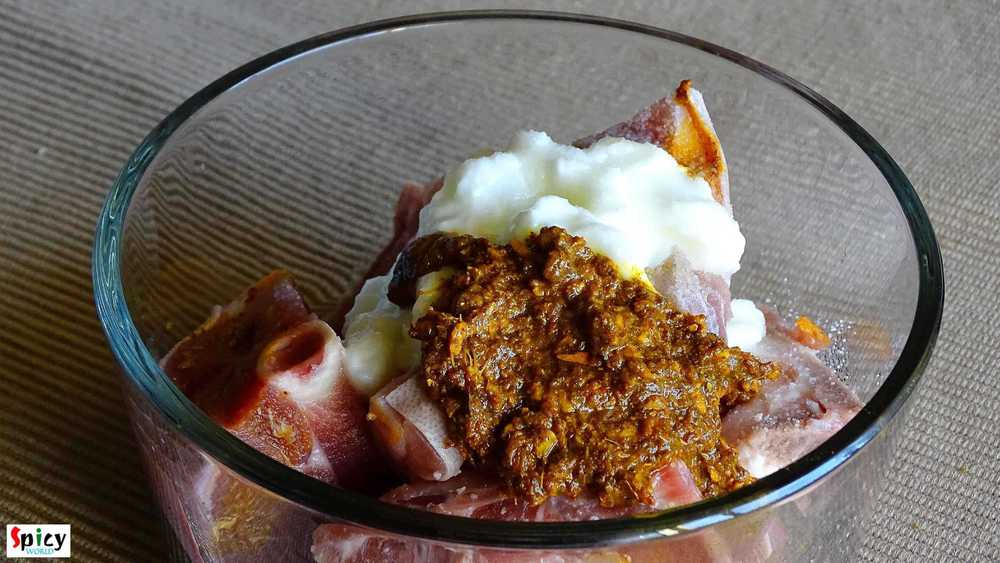Heat the remaining mustard oil in a kadai.
Add few onion slices first. Fry them golden in color.
Then remove them from pan and keep it aside for garnishing.
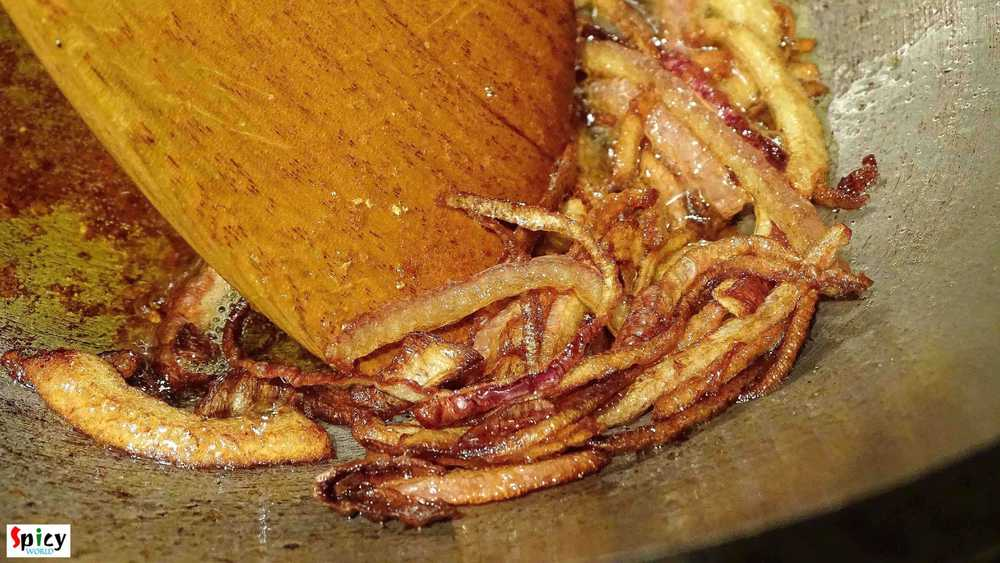In the remaining oil add the remaining onion slices. Fry them for 6-7 minutes.
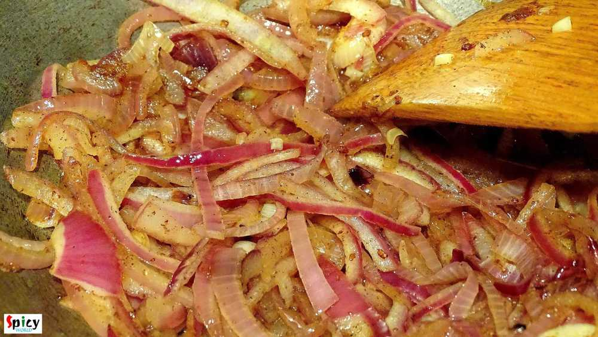Then add the marinated mutton pieces. Mix it well for 6 minutes.
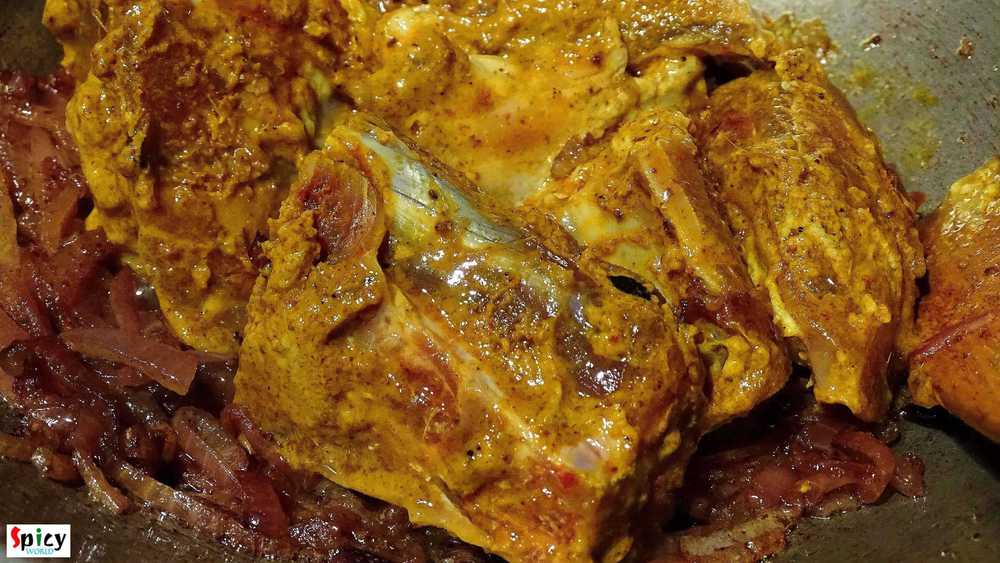Add the potatoes and salt. Mix it and cover the pan. Cook it on slow flame for 20-25 minutes.
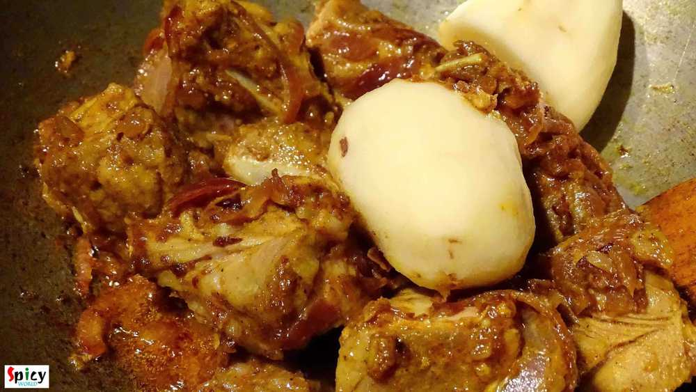Mutton will release lots of water.
Add half Teaspoon of sugar to it. Mix well and cook it.
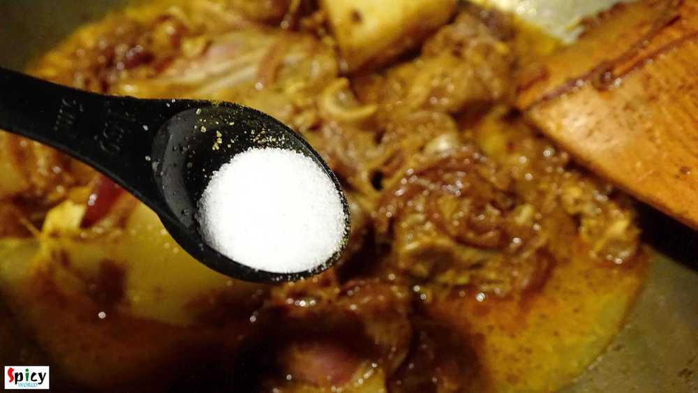After half an hour you can see the potatoes become fully soft. But mutton needs to cook more.
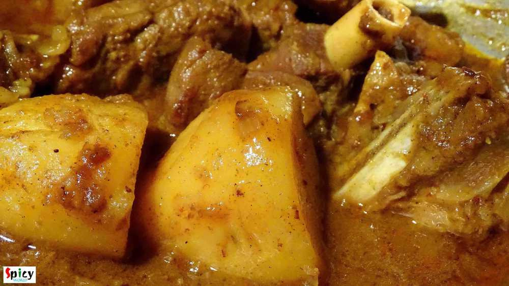Boil a cup of water in a pressure cooker.
Add all the whole spices in the boiling water. In that way the water will becomw flavorful.
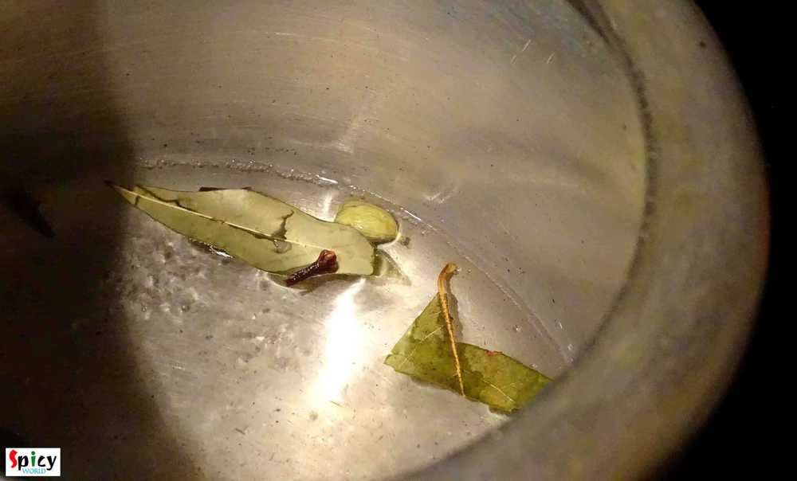Now add mutton with gravy in the pressure cooker. Keep aside the potatoes.
Give the mutton pressure for 10-15 minutes or until it becomes soft.
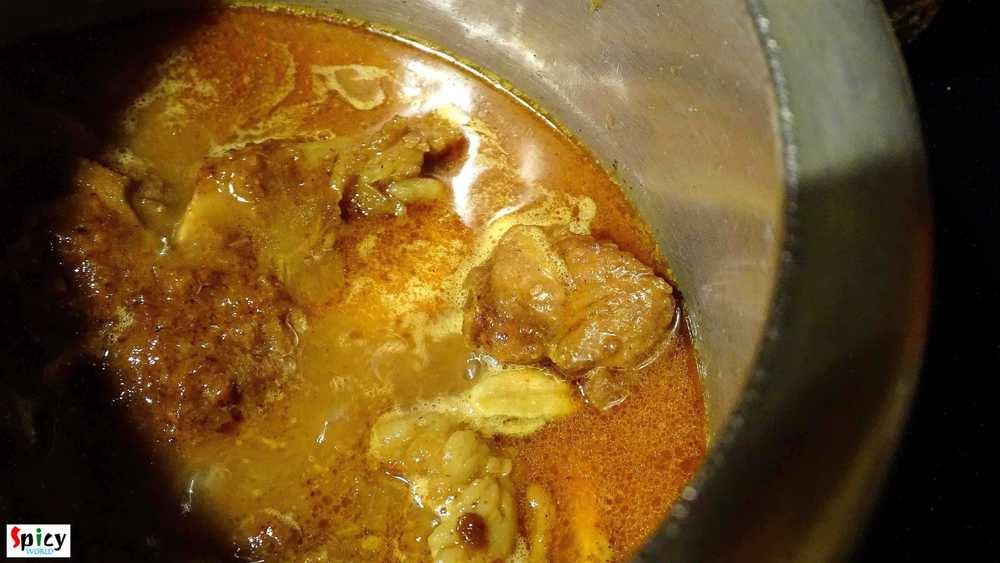If you have time in your hand, skip the cooker process.
When the potatoes become soft, remove them from the pan.
Add a cup of warm water and all the whole spices to the mutton.
Cook it in slow flame until it become soft.
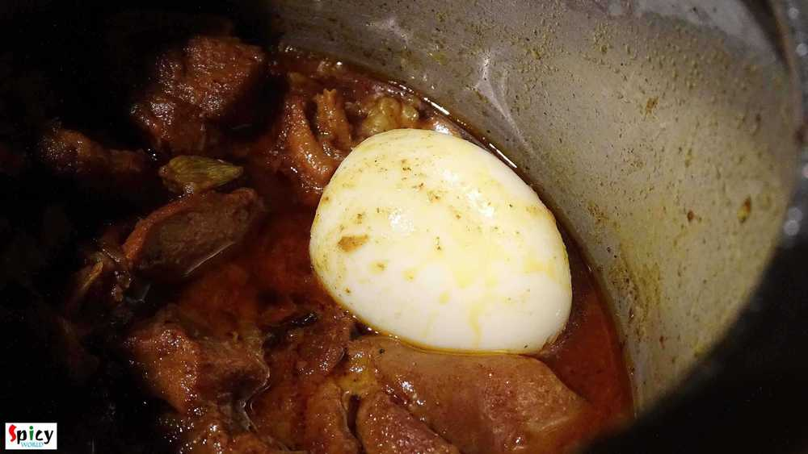Check the seasoning.
When the mutton will become fully soft add the boiled egg. Simmer for just 2 minutes and then serve.
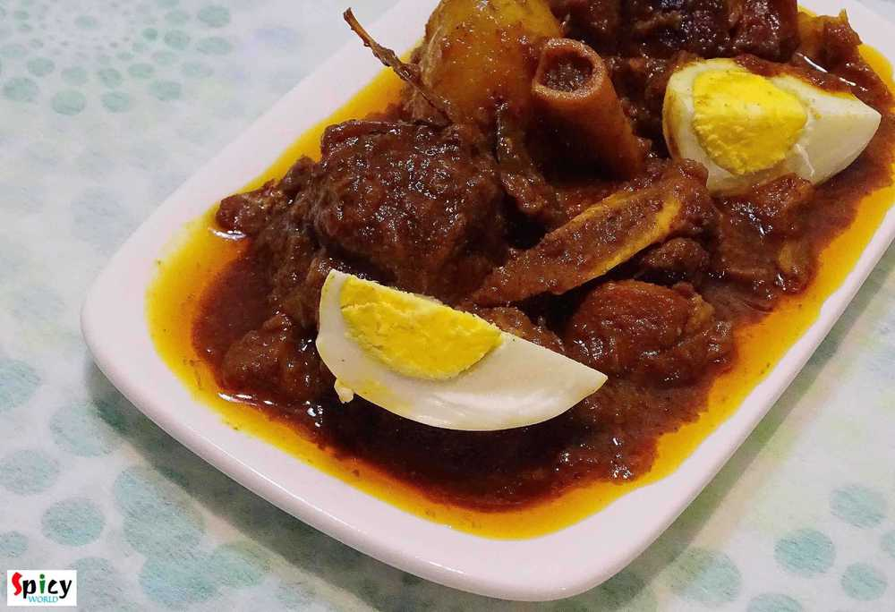Your mutton dakbunglow curry is ready ...
Enjoy this hot with plain basmati rice ...
")